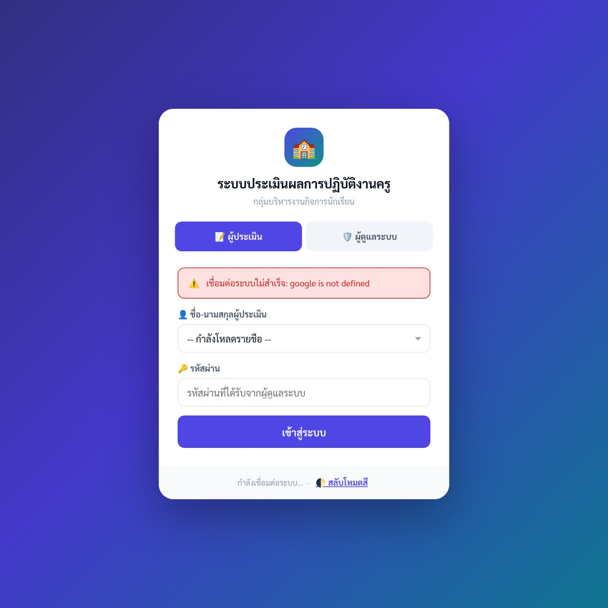
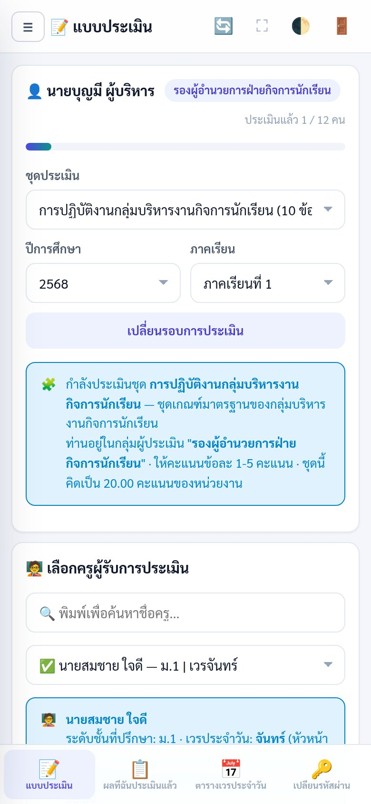
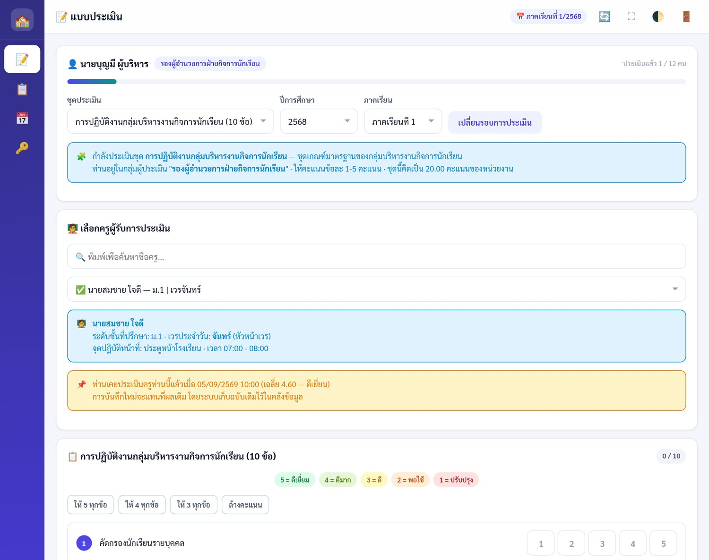
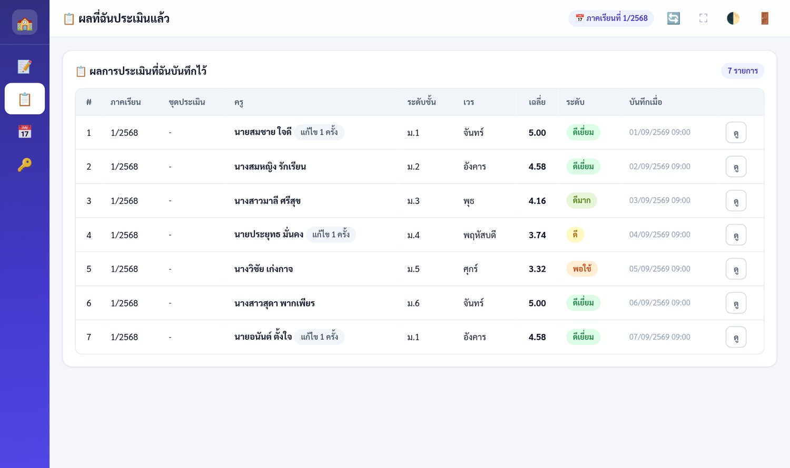
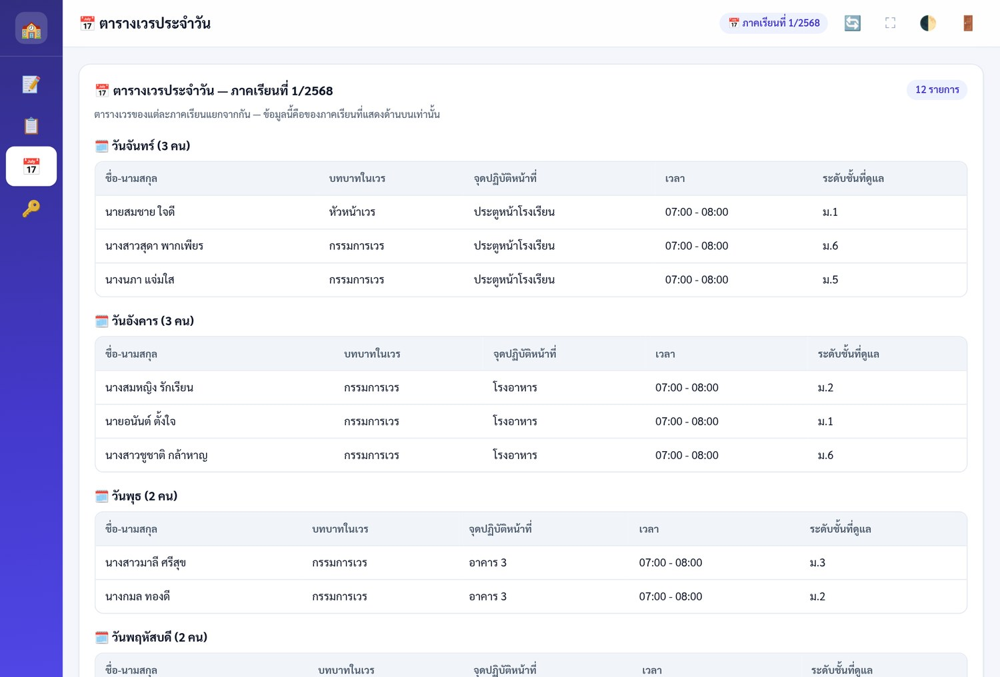
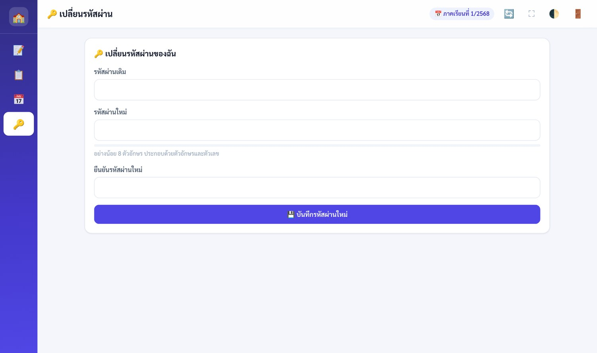

ประเมินครู 1 คน ใช้เวลาประมาณ 1–2 นาที ระบบมีปุ่มให้คะแนนรวดเร็ว แล้วปรับเฉพาะข้อที่ต้องการ
เปิดจากลิงก์เดียวได้ทั้งคอมพิวเตอร์ แท็บเล็ต และมือถือ ไม่ต้องติดตั้งโปรแกรมเพิ่ม
| รายการ | รายละเอียด |
|---|---|
| ลิงก์เข้าระบบ | ผู้ดูแลระบบจะส่งลิงก์ให้ทางไลน์กลุ่มหรืออีเมล — บันทึกไว้ในหน้าจอหลักของมือถือได้ |
| ชื่อ-นามสกุล | ชื่อของท่านที่อยู่ในระบบ (เลือกจากรายการ) |
| รหัสผ่าน | ผู้ดูแลระบบเป็นผู้ออกให้ ระบบสุ่มให้ครั้งแรกและจะให้เปลี่ยนเมื่อเข้าใช้ครั้งแรก |
ระบบจะแสดงหน้าเข้าสู่ระบบ โดยเลือกแท็บ 📝 ผู้ประเมิน ไว้ให้อยู่แล้ว
กดที่ช่องรายชื่อแล้วเลือกชื่อตนเอง (บางโรงเรียนอาจตั้งค่าให้พิมพ์ชื่อเอง)
หากกรอกผิดหลายครั้งติดกัน ระบบจะล็อกบัญชีชั่วคราวประมาณ 15 นาที เพื่อความปลอดภัย

เมื่อเข้าใช้งานครั้งแรกด้วยรหัสผ่านที่ผู้ดูแลระบบออกให้ ระบบจะพาไปหน้า 🔑 เปลี่ยนรหัสผ่าน โดยอัตโนมัติ กรุณาตั้งรหัสผ่านใหม่ที่มีเพียงท่านเท่านั้นที่ทราบ
| เมนู | ใช้ทำอะไร |
|---|---|
| 📝 แบบประเมิน | ให้คะแนนครู — เมนูหลักที่ใช้บ่อยที่สุด (เลือกชุดประเมินได้ที่นี่) |
| 📋 ผลที่ฉันประเมินแล้ว | ดูรายการที่บันทึกไปแล้ว และดูคะแนนรายข้อย้อนหลัง |
| 📅 ตารางเวรประจำวัน | ดูตารางเวรของภาคเรียนที่เลือก แยกตามวัน |
| 🔑 เปลี่ยนรหัสผ่าน | ตั้งรหัสผ่านใหม่ด้วยตนเอง |
| ปุ่ม | หน้าที่ |
|---|---|
| ☰ | เปิดเมนู (แสดงเฉพาะบนมือถือและแท็บเล็ตแนวตั้ง) |
| 🔄 | โหลดข้อมูลใหม่ล่าสุดจากระบบ |
| ⛶ | ขยายเต็มหน้าจอ |
| 🌓 | สลับโหมดสว่าง / โหมดกลางคืน |
| 🚪 | ออกจากระบบ |
เมนูอยู่ด้านซ้าย เห็นทุกเมนูพร้อมกัน บนแท็บเล็ตเมนูจะย่อเป็นแถบไอคอน แตะค้างเพื่อดูชื่อเมนู
มีแถบเมนูด้านล่างสำหรับเมนูที่ใช้บ่อย และกด ☰ เพื่อเปิดเมนูทั้งหมด ตารางข้อมูลจะแสดงเป็นการ์ดอ่านง่าย

ระบบตั้งค่าให้อัตโนมัติแล้ว หากท่านได้รับมอบหมายมากกว่า 1 ชุดประเมิน จะมีช่องให้เลือกเพิ่มขึ้นมา · ต้องการประเมินย้อนหลังให้เลือกภาคเรียนแล้วกด เปลี่ยนรอบการประเมิน
พิมพ์ชื่อในช่องค้นหาเพื่อหาได้เร็วขึ้น ครูที่ท่านประเมินไปแล้วจะมีเครื่องหมาย ✅ นำหน้า
ระบบจะแสดงระดับชั้นที่ปรึกษา เวรประจำวัน จุดปฏิบัติหน้าที่ และเวลาของภาคเรียนนั้น เพื่อใช้ประกอบการพิจารณา
ให้คะแนนตามมาตราของชุดนั้น (ปกติ 1–5 บางชุดอาจเป็น 1–4 หรืออื่น ๆ) ใช้ปุ่มลัดให้คะแนนเต็มทุกข้อแล้วปรับเฉพาะข้อที่ต้องการจะเร็วที่สุด ตัวเลขมุมขวาบนบอกว่าให้คะแนนไปแล้วกี่ข้อ
ปุ่ม ✅ บันทึกผลการประเมิน จะกดได้เมื่อให้คะแนนครบทุกข้อแล้วเท่านั้น

โรงเรียนอาจแบ่งการประเมินออกเป็นหลาย ชุดประเมิน เช่น ชุดงานกิจการนักเรียน และชุดงานวิชาการ แต่ละชุดมีเกณฑ์ มาตราคะแนน และผู้ประเมินของตัวเอง คิดคะแนนแยกกัน กล่องข้อมูลสีฟ้าใต้ช่องเลือกจะบอกว่าท่านกำลังประเมินชุดใด อยู่ในกลุ่มผู้ประเมินกลุ่มใด ให้คะแนนข้อละกี่คะแนน และชุดนั้นคิดเป็นกี่คะแนนของหน่วยงาน
| คะแนน | ความหมาย | คำอธิบาย |
|---|---|---|
| 5 | ดีเยี่ยม | ปฏิบัติได้ครบถ้วนสมบูรณ์ เป็นแบบอย่างที่ดี |
| 4 | ดีมาก | ปฏิบัติได้ครบถ้วน มีคุณภาพดี |
| 3 | ดี | ปฏิบัติได้ตามมาตรฐาน |
| 2 | พอใช้ | ปฏิบัติได้บางส่วน ต้องปรับปรุง |
| 1 | ปรับปรุง | ปฏิบัติได้น้อย ต้องปรับปรุงอย่างเร่งด่วน |
ระบบแสดงเฉพาะครูและเกณฑ์ที่ท่านมีสิทธิ์ประเมินเท่านั้น จึงไม่ต้องกังวลว่าจะประเมินผิดคน
| บทบาทของท่าน | ประเมินครูกลุ่มใด | จำนวนข้อ |
|---|---|---|
| รองผู้อำนวยการฝ่ายกิจการนักเรียน | ครูทุกคน | 10 ข้อ |
| หัวหน้ากลุ่มบริหารงานกิจการนักเรียน | ครูทุกคน | 10 ข้อ |
| หัวหน้าระดับชั้น | ครูในระดับชั้นที่รับผิดชอบ | 8 ข้อ |
| หัวหน้าเวรประจำวัน | ครูที่อยู่เวรวันเดียวกัน ตามตารางเวรของภาคเรียนนั้น | 1 ข้อ |
เลือกครูคนเดิมอีกครั้งในเมนู 📝 แบบประเมิน ระบบจะดึงคะแนนเดิมขึ้นมาให้แก้ไข เมื่อบันทึกใหม่จะแทนที่ผลเดิม
เมนู 📋 ผลที่ฉันประเมินแล้ว แสดงรายการทั้งหมดที่ท่านบันทึกไว้ พร้อมคะแนนเฉลี่ยและระดับผล กดปุ่ม ดู เพื่อเปิดดูคะแนนรายข้อและข้อเสนอแนะที่เคยเขียนไว้

เมนู 📅 ตารางเวรประจำวัน แสดงตารางเวรของภาคเรียนที่เลือก แยกตามวัน พร้อมบทบาทในเวร จุดปฏิบัติหน้าที่ และช่วงเวลา

แถบสีใต้ช่องจะบอกความแข็งแรงของรหัสผ่าน — ยิ่งเขียวยิ่งดี

ครูผู้ประเมินไม่สามารถรีเซ็ตรหัสผ่านเองได้ กรุณาแจ้งผู้ดูแลระบบเพื่อ:
หน้านี้สำหรับครูที่ทำหน้าที่ผู้ดูแลระบบ — รายละเอียดฉบับเต็มอยู่ในคู่มือผู้ดูแลระบบ
| ช่วงเวลา | สิ่งที่ต้องทำ |
|---|---|
| ต้นภาคเรียน | ตั้งปีการศึกษา/ภาคเรียนปัจจุบัน → คัดลอกหรือสร้างตารางเวรของภาคเรียนใหม่ → ตรวจทะเบียนครู ผู้ประเมิน และ ชุดประเมิน ให้เป็นปัจจุบัน → ตั้งช่วงวันที่เปิดให้ประเมิน |
| ระหว่างภาคเรียน | ติดตามที่เมนู 📈 ติดตามความคืบหน้า และกด ✉️ แจ้งเตือน ผู้ที่ยังทำไม่ครบ · รีเซ็ต/ปลดล็อกบัญชีให้ครูเมื่อมีการร้องขอ |
| ก่อนสรุปผล | เมนู 🔎 ตรวจคุณภาพการประเมิน → ทบทวนข้อสังเกตกับผู้ประเมิน และตามให้ครูได้รับการประเมินครบทุกกลุ่ม |
| ปลายภาคเรียน | เลือกและจัดลำดับผู้ถูกประเมิน → กดประมวลผลดูตัวอย่าง → ส่งออก Excel / PDF และ 🪪 รายงานรายบุคคล เพื่อแจ้งผลให้ครูแต่ละคน |
| ปิดภาคเรียน | ล็อกภาคเรียนที่สรุปผลแล้ว → ย้ายข้อมูลเข้าคลัง (เมนูคลังข้อมูล หรือเมนูเคลียร์ข้อมูล) แล้วเปลี่ยนภาคเรียนปัจจุบัน |
| งาน | วิธีทำโดยย่อ |
|---|---|
| เพิ่มครูทีละหลายคน | ครูผู้รับการประเมิน → 📥 นำเข้ารายชื่อ → ดาวน์โหลดเทมเพลต Excel/CSV → กรอกแล้วอัปโหลดกลับ → ตรวจตารางสถานะ → นำเข้า |
| ออกรหัสผ่านให้ผู้ประเมิน | ผู้ประเมิน → ➕ เพิ่มผู้ประเมิน (ระบบสุ่มรหัสให้ และส่งอีเมลอัตโนมัติหากกรอกอีเมลไว้) หรือกด 🔑 รีเซ็ต สำหรับคนที่ลืมรหัส |
| ตั้งน้ำหนักกลุ่มผู้ประเมิน | ⚖️ น้ำหนักผู้ประเมิน → เลือกชุด → ปรับ % แต่ละกลุ่ม → กรอกคะแนนที่หน่วยงานได้รับ → กด “ดูผลกระทบก่อนบันทึก” → บันทึก |
| สร้างชุดประเมินใหม่ | 🧩 ชุดประเมิน → ➕ สร้างชุดประเมิน → ตั้งคะแนนเต็มต่อข้อ และคะแนนที่หน่วยงานได้รับ → กด 👥 ผู้ประเมิน เพื่อกำหนดกลุ่มและน้ำหนัก → กด 📝 เกณฑ์ เพื่อเพิ่มข้อประเมิน |
| แจ้งเตือนผู้ที่ยังไม่ประเมิน | 📈 ติดตามความคืบหน้า → ✉️ แจ้งเตือนผู้ประเมินที่ค้าง → เลือกผู้รับ → ส่ง (ต้องมีอีเมลของผู้ประเมินในระบบ) |
| ส่งออกรายงาน | ประมวลผล/ส่งออก → เลือกภาคเรียน → เลือกและจัดลำดับผู้ถูกประเมิน → ประมวลผล/ดูตัวอย่าง → ส่งออก Excel หรือ PDF |